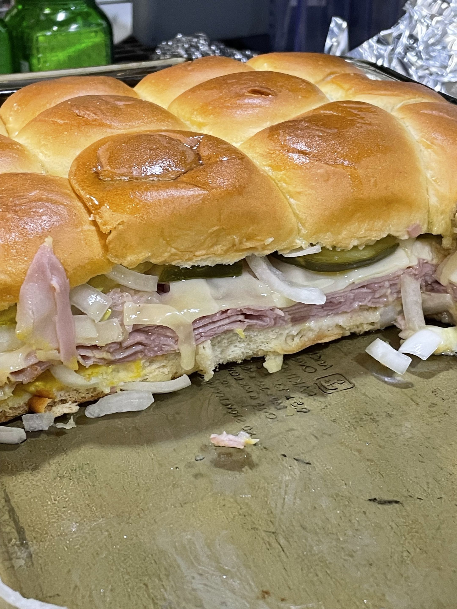

Cuban Sliders
I like to make these when I'm feeling lazy or am in a rush.

Ingredients
- 2 pkg. (12 oz each) Hawaiian sweet rolls
- 1 1/4 lbs thinly sliced deli ham
- 10 slices slices swiss or gouda cheese
- 24 dill pickle slices (about 1 jar)
- finely sliced onion to taste
- dijon mustard to taste
- light mayo to taste
- butter to taste
Cooking Directions
- Cut all of the Hawaiian rolls in half. Place the bottoms in a well greased casserole dish.
- Layer the mayo, ham, cheese, pickles, onion, and mustard into the dish.
- Add the tops of the buns. Melt the butter and brush it over the buns. Cover with foil.
- Bake at 350 degrees F for 10 minutes. Remove the foil. Cook for 10 more minutes.